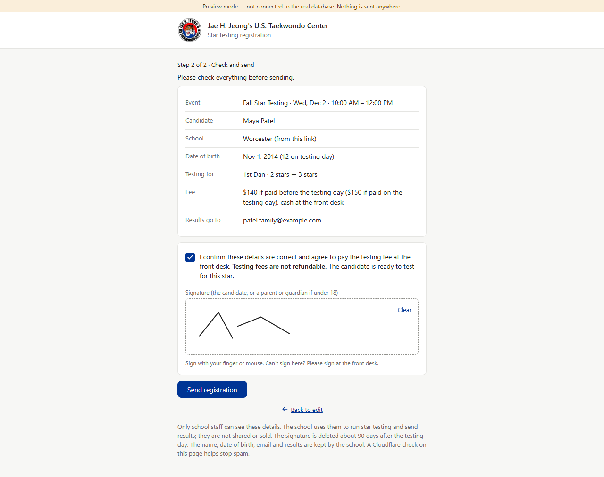
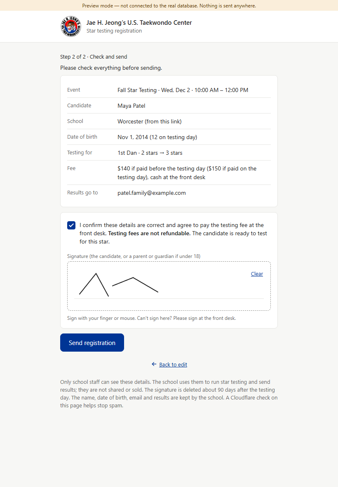
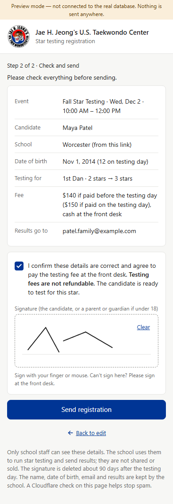
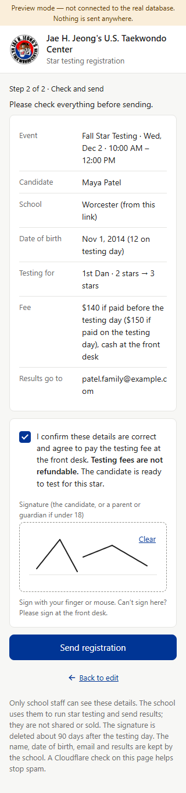
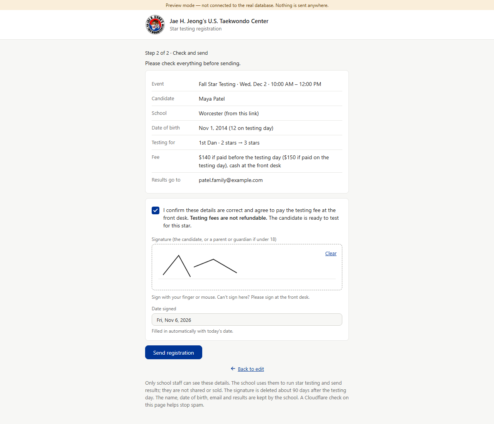
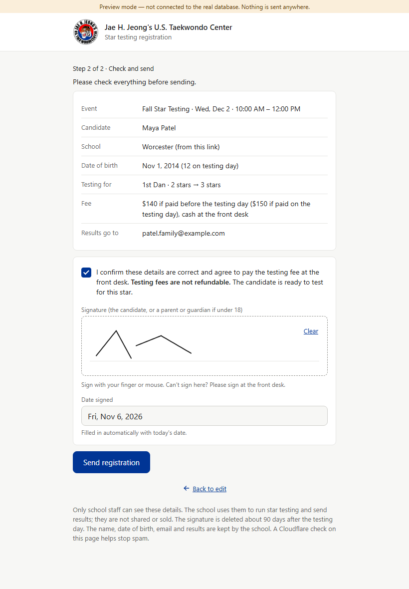
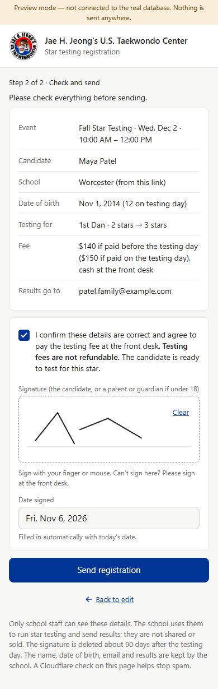
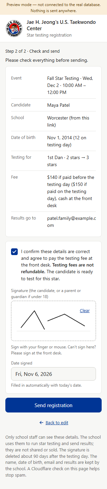
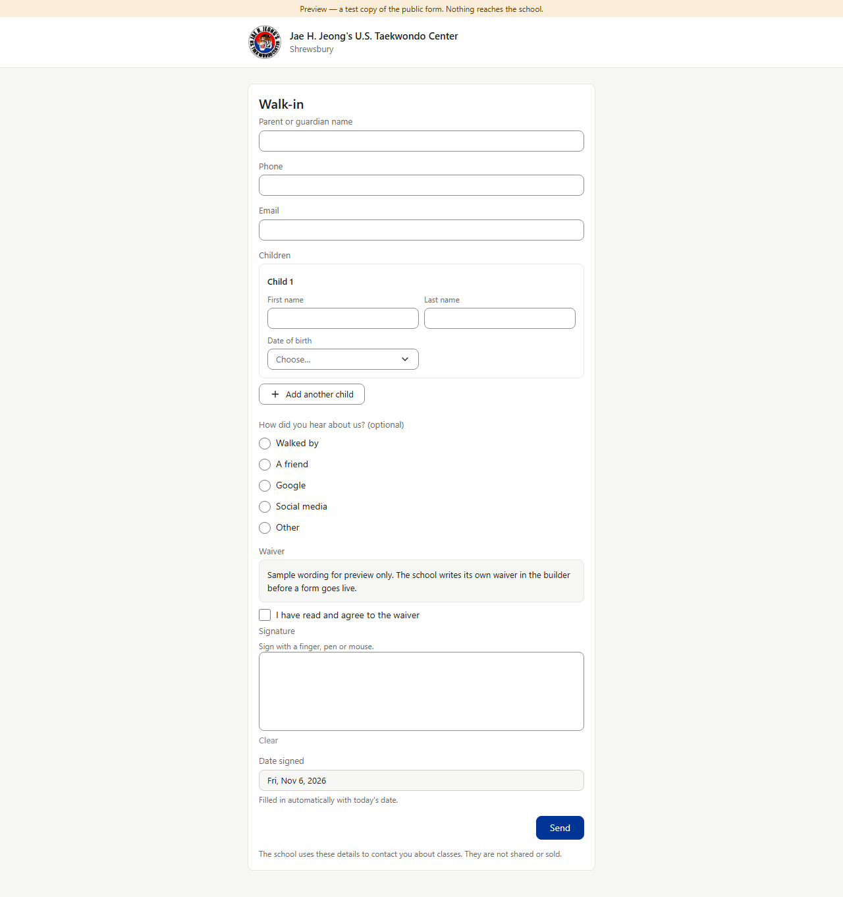

Date signed · B1 — Star family form, “Check and send” step
Under the signature pad (after its hint line) a new box: label “Date signed”, a gray box that can’t be changed with today’s date (“Fri, Nov 6, 2026”), and the hint “Filled in automatically with today’s date.” — the same box New students’ forms already have. Amber = where the box goes; green = the new box.
Today

PC 1280×800. The signature ends with its hint line; nothing shows the date.

Tablet 820×1180, touch.

Phone 390×844, touch.

320 wide, touch.
After

PC 1280×800. “Date signed · Fri, Nov 6, 2026”, gray box, hint under it.

Tablet 820×1180, touch. Box 40 px tall, 16 px text (like the form’s other boxes on touch). Label 12 px, the same as “Signature” above it.

Phone 390×844, touch. Full width of the card; both labels 12 px.

320 wide, touch. The date fits on one line.

Reference — New students’ form today (Walk-in, PC): the box being copied. Same gray box, words and hint; its label is 13 px on PC, the Star form’s labels are 12 px on PC (13 px on touch), so the Star box uses the Star form’s own label size.
Label size on touch: the Signature label is held at 12 px on every size (.reg-field--sign .reg-label), while other Star labels grow to 13 px on touch. The “Date signed” label is drawn at 12 px everywhere so the two labels under each other match; the build does the same (e.g. puts the box inside .reg-field--sign, or gives its label 12 px). The date is the day in Massachusetts time, written like the rest of the forms (“Fri, Nov 6, 2026”). The box is read-only: families can’t type in it. It is not saved from the box — the database already stores the moment the form is sent, and staff see that date (picture B2).
Rulebook v0.638 (Jeffrey, 2026-11-04): every family form shows “Date signed” under the signature, filled in automatically with the day the form is sent, gray, can’t be changed; wherever staff see a signature, its date signed shows with it. Preview screenshots (fake database, today = Fri, Nov 6, 2026). The “After” column is drawn over the real page by a small script (mock-dates.js) — nothing in the app was changed. No database change: the day the form is sent is already saved (star_candidate_signatures.signed_at).